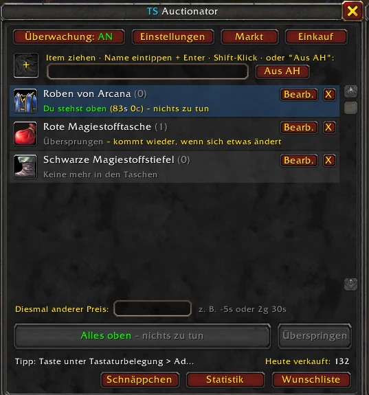
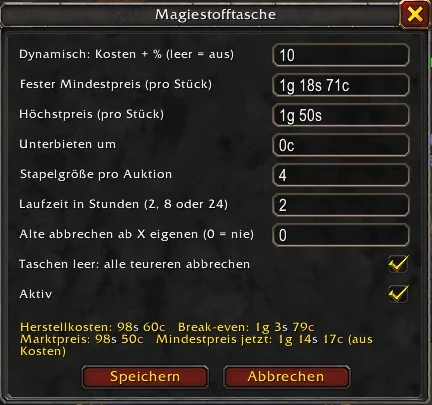
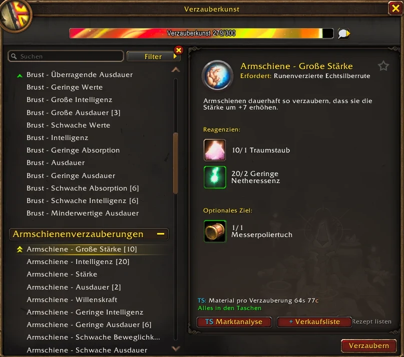

Deine Auktionen bleiben oben.
Unterbieten, einkaufen und rechnen, mit einem Klick pro Schritt.
Kostenlos, für WoW Forever. Schon installiert? Dann den Updater nehmen.

Preise, die sich selbst prüfen
Du legst fest, was ein Item mindestens bringen muss. Den Rest erledigt das Add-on bei jedem Scan.
- Mindestpreis fest oder aus den Materialkosten plus Marge
- Unterbieten um genau den Betrag, den du willst
- Gewinn pro Stück direkt in der Übersicht
- Ausverkauf: Mindestpreis auf Wunsch ignorieren

Herstellen mit Plan
Im Berufsfenster siehst du Materialkosten, AH-Preis, Gewinn und Nachfrage für jedes Rezept.
- Warteschlange, die vorausrechnet: erst Stoffballen, dann Taschen
- Selbst herstellen oder kaufen: das Günstigere wird vorgeschlagen
- „Sofort verzaubern“ bestätigt das Ersetzen gleich mit

Und dazu
Einkaufsliste
Rechnet aus, was dir für deine Rezepte fehlt, und kauft es Schritt für Schritt im AH.
Post abholen
Gold und zurückgekommene Items mit einem Klick, samt Liste, was noch unterwegs ist.
Statistik
Verkäufe, Einnahmen, Gebühren und die besten Verkaufszeiten pro Item.
Schnäppchen
Findet beim Komplettscan Items weit unter ihrem üblichen Preis.
Wunschliste
Meldet sich, sobald ein gesuchtes Item unter deinem Wunschpreis auftaucht.
Marktanalyse
Zeigt, welche deiner Rezepte gerade am meisten Gewinn bringen.
In drei Schritten im Spiel
- ZIP herunterladen über den Knopf oben.
- Entpacken und den Ordner
TSAuctionatornachWorld of Warcraft\_forever_\Interface\AddOnskopieren. - Spiel neu starten und im Charakterbildschirm unter „AddOns“ prüfen, dass es aktiv ist.
Später aktualisieren
Lade einmal den Updater und leg ihn z. B. auf den Desktop. Ein Doppelklick holt jederzeit die neueste Version und ersetzt den Add-on-Ordner. Deine Einstellungen bleiben erhalten.
Nach Blizzards Regeln
Jede Aktion im Auktionshaus braucht deinen Klick: einstellen, abbrechen, kaufen. TS Auctionator sagt dir, was als Nächstes dran ist, und legt den Knopf bereit. Gedrückt wird er von dir.